普通账号小白版
大宜宾录音助手安装和使用教程
先安装 Chrome 插件，再登录，最后上传录音或监听网页录音。普通用户不用配置模型、转写、存储等参数。
0 30 秒最短流程只想先用起来，照这 6 步走。 ›
点本页上方“下载最新版插件压缩包”。
不要直接装 zip，要先解压成文件夹。
Chrome 地址栏输入 chrome://extensions。
打开“开发者模式”，点“加载已解压的扩展程序”。
输入自己的花名/工号；默认密码是 dayibin。
有文件就“上传录音”，网页里播放的录音就用“监听”。
1 第一次安装插件下载、解压、加载到 Chrome，一步一步来。 ›
安装前确认
- 电脑已经安装 Chrome 浏览器。
- 能打开本教程页，说明基本连上办公室服务。
- 已经知道自己的花名/工号；默认密码是
dayibin。
- 点击本页上方“下载最新版插件压缩包”。
- 下载后找到
voice-to-word-extension-0.1.9.zip这类文件。 - Windows 右键选择“全部解压缩”；Mac 双击 zip。
- 把解压出的文件夹放到固定位置，不要放在微信临时目录。
- Chrome 地址栏输入
chrome://extensions，按回车。 - 打开右上角“开发者模式”。
- 点击“加载已解压的扩展程序”。
- 选择刚才解压出来的插件文件夹。
- 看到“大宜宾录音助手”卡片，就安装成功。
2 登录插件普通账号只填花名/工号和密码，不用配置参数。 ›
打开和登录
- 点击 Chrome 右上角拼图图标，找到“大宜宾录音助手”。
- 点击插件，浏览器右侧会打开侧边栏。
- “服务地址”一般不用改。
- “工号/花名”输入自己的花名或工号。
- “密码”输入
dayibin。如果管理员给过新密码，就用新密码。 - 点击“登录”。
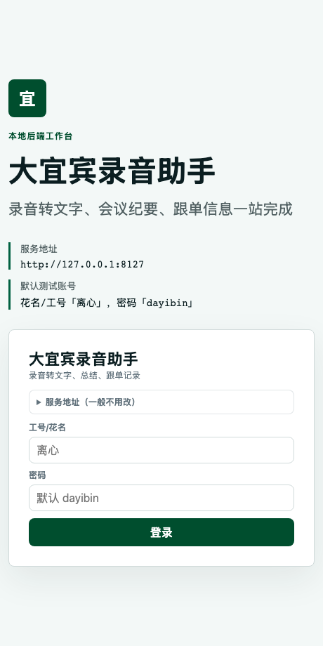
3 认识首页首页能看最近记录，也能进入上传和历史。 ›
首页常用入口
- “上传录音文件”：手里有 mp3、m4a、wav 等文件时点这里。
- “查看历史记录”：找以前处理过的录音。
- “最近历史”：可以直接点某一条查看结果。
- 右上角头像/名字：进入个人资料、修改密码、退出登录。
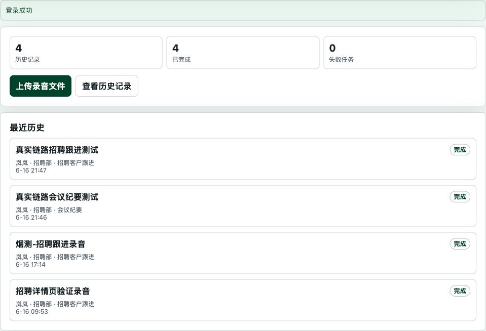
4 上传录音文件最稳的方式：先有录音文件，再上传生成纪要或跟单。 ›
上传步骤
- 点“上传录音文件”或顶部/侧边“上传”。
- 点“选择文件”，选择录音或视频文件。
- 填写“录音标题”，例如“6月客户电话沟通”。不填也可以，系统会先用文件名。
- 选择处理方式：会议记录选“会议纪要”；客户沟通、商机整理选“跟单信息”。
- 点击“上传并生成纪要”。
支持 mp3、m4a、wav、aac、flac、ogg、opus、mp4、mov、webm。长录音会慢一些，上传后可以先离开，稍后到历史里查看。
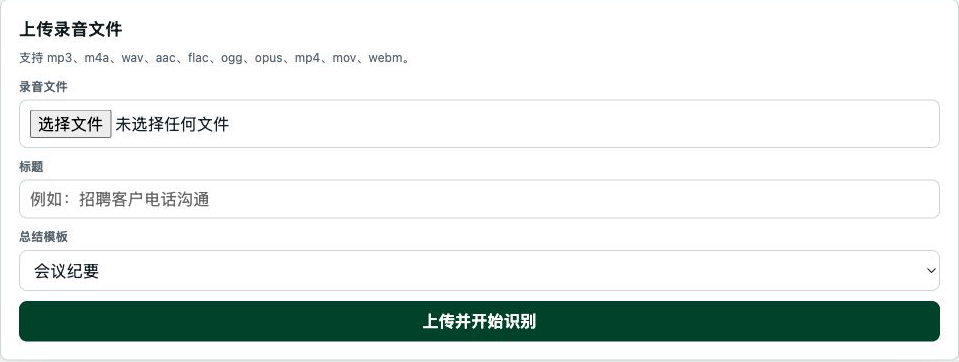
处理方式怎么选
- 会议纪要：适合会议、培训、复盘、讨论、电话会议。
- 跟单信息：适合客户跟进、招聘客户、红娘客户、商机沟通。
- 不确定时先选会议纪要，后面也可以重新生成。
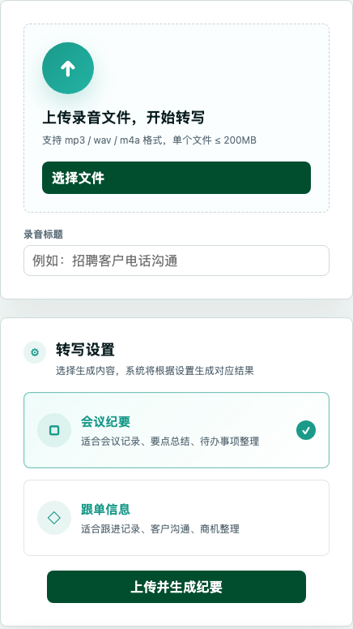
5 监听网页录音录音在网页播放器里，不方便下载时用这个。 ›
先在网页里播放，再点监听
- 先打开保存录音的原网页，并确认自己已登录那个网页账号。
- 找到要识别的那条录音，先点播放。
- 打开“大宜宾录音助手”，点“监听”。
- 点“识别当前页录音”。
- 如果出现候选录音，填标题、选处理方式，再点“生成纪要”或“生成跟单”。
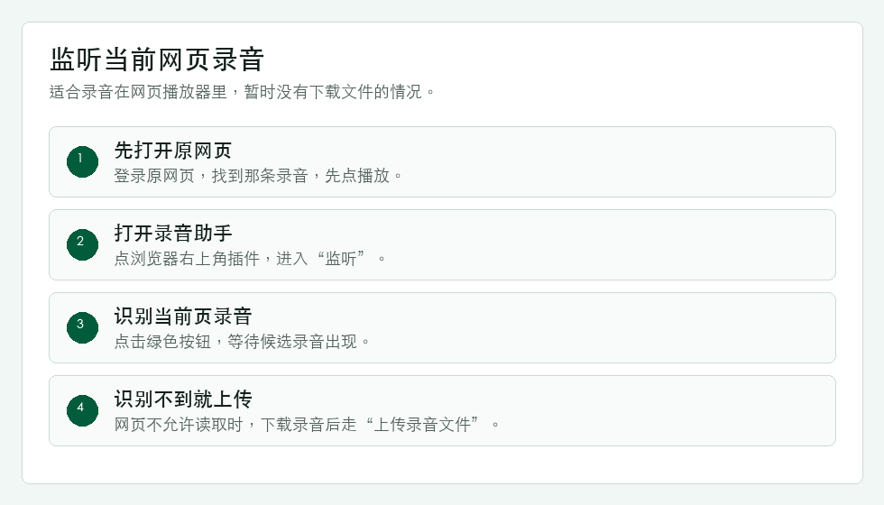
看到候选录音后
- 标记“当前录音”的通常就是最可能的一条。
- 标题可以改成人能看懂的名字。
- 如果选的是“跟单信息”，先选择跟单类型，再在候选卡片里填写用户 ID。
- 点“生成跟单”后可继续下一通电话，后台会继续转写和生成跟单。
- 如果选的是“会议纪要”，点“生成纪要”后进入详情页等待结果。
- 如果提示“需手动上传”，说明网页不允许直接读取，下载录音文件后改用上传。
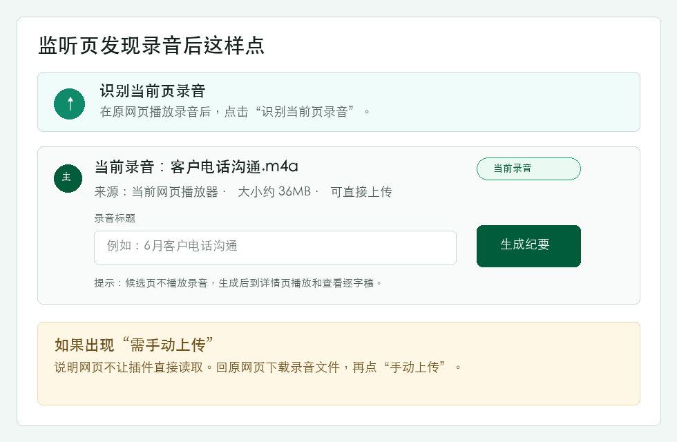
6 查看结果、复制和下载历史、总结、逐字稿、跟单、备注、导出都在详情页。 ›
从历史打开记录
- 点“历史”。
- 找到录音标题，右侧显示“完成”说明可以看结果。
- 搜索框可以输入用户 ID、录音标题、跟单关键词、会议纪要关键词或逐字稿关键词。
- 点那条记录进入详情页。
- 如果仍是“转写中/总结中”，点“刷新”或稍后再看。
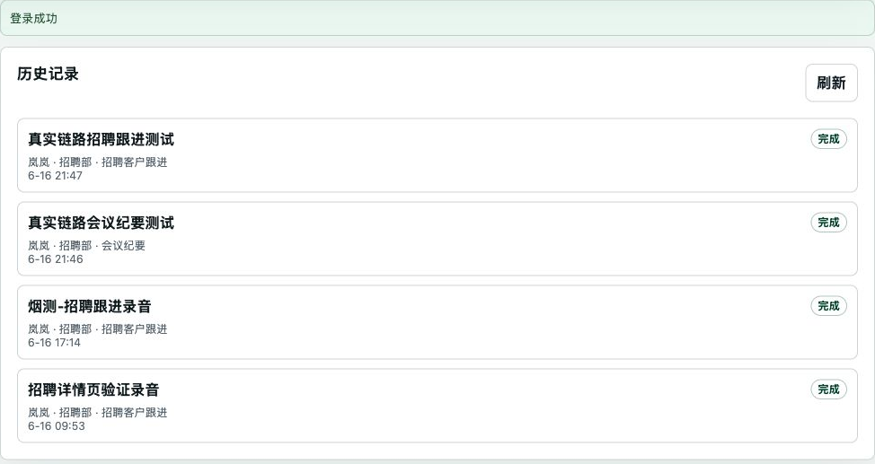
会议纪要记录默认打开这里，只放会议总结、要点、待办和风险。
完整文字记录，带时间点和说话人。历史搜索框也能按逐字稿关键词找到录音。
跟单记录默认打开这里，显示用户 ID、跟单类型、阶段、标签和字段化跟单内容。
只写人工补充说明，不再混放 AI 生成的跟单结果。
需要留档时，可下载 Markdown、TXT、DOCX、PDF 等文件。
展开看“总结”截图和步骤
- 会议纪要记录进入详情后，默认先看“会议概览”。
- 可以点“复制”，把总结粘贴到飞书。
- 如果总结不完整，点“重新生成”。
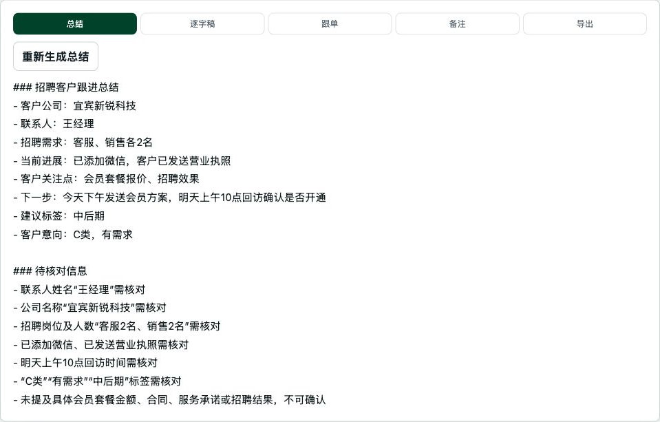
展开看“逐字稿”截图和步骤
- 点“会议逐字稿”。
- 上方可以播放录音。
- 用“搜索逐字稿”查人名、客户名、关键词。
- 需要核对原话时，看每段前面的时间点。
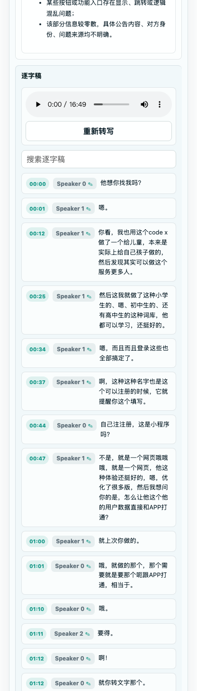
展开看“跟单信息/备注/导出”截图和步骤
跟单信息
- 跟单记录打开后默认进入“跟单信息”。
- 用户 ID 会优先来自监听候选卡片，也可以在这里补改。
- 检查阶段、标签、企业/客户、状态和跟单内容。
- 有需要就修改，最后点“保存跟单修改”。
- 回到“历史”后，可在搜索框输入用户 ID、跟单正文或跟单字段关键词找回录音。
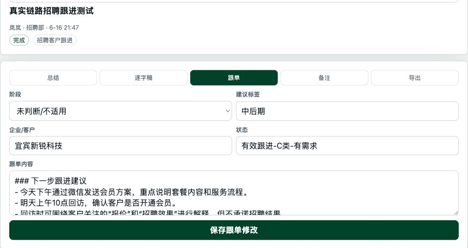
备注和导出
- 备注：写自己的补充说明，点“保存备注”。
- 导出：选择 Markdown、TXT、DOCX 或 PDF 下载。
- 只要是普通留档，优先下载 DOCX 或 PDF。
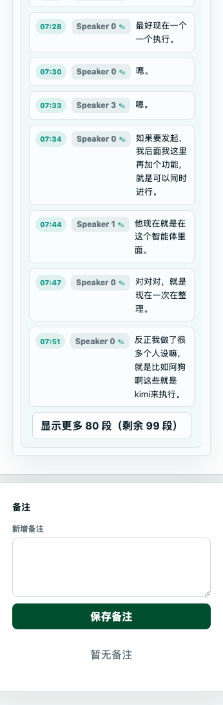
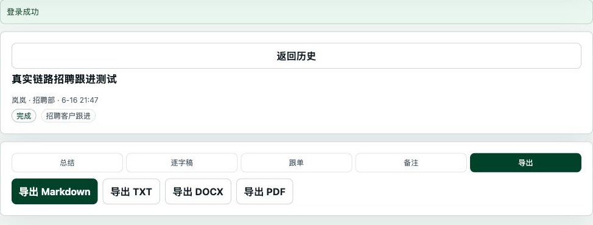
8 个人资料和修改密码头像、名字、AI 偏好、密码都在右上角个人资料里。 ›
修改个人资料
- 点击右上角头像/名字。
- 可以修改花名、头像底色、自我介绍。
- “AI 生成偏好”可以写你希望纪要更关注什么，比如待办、风险、责任人。
- 点“保存个人资料”。
修改密码
- 输入旧密码。第一次通常是
dayibin。 - 输入新密码，再确认一遍。
- 点“保存密码”。
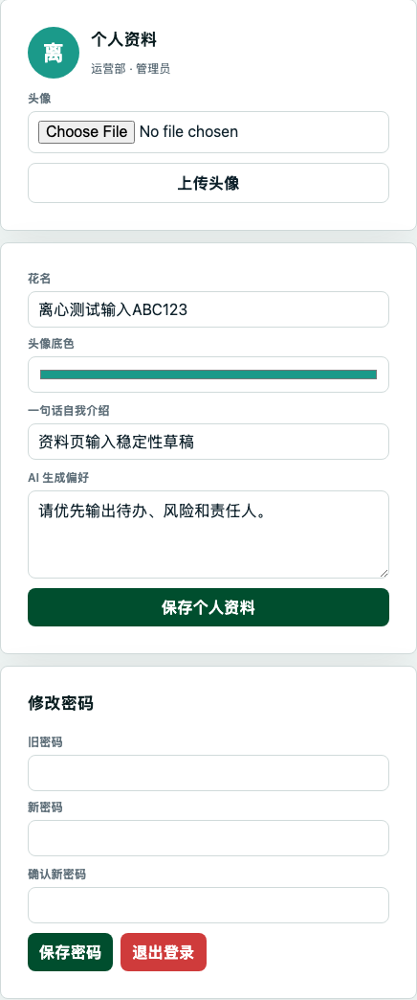
9 以后有新版怎么更新下载新版 zip、解压、刷新扩展。 ›
插件里如果提示“发现新版插件”，点“下载新版插件包”。也可以直接回到本教程页下载。
把新版 zip 解压。可以覆盖原来的旧插件文件夹，也可以放成一个新的固定文件夹。
打开 chrome://extensions，找到“大宜宾录音助手”，点“重新加载”。
重新点“加载已解压的扩展程序”，选择新文件夹。
10 常见问题哪里卡住，就展开这一栏查。 ›
先确认 chrome://extensions 右上角“开发者模式”已经打开。
说明选错文件夹，或者还没解压 zip。请选择里面能看到 manifest.json 的文件夹。
先检查花名/工号和密码。默认密码是 dayibin；如果改过密码，就用新密码。
检查解压出来的插件文件夹是否被删除、改名或移动。找不到就重新下载、解压、加载。
先在原网页播放录音，再点“识别当前页录音”。还不行就下载录音后手动上传。
长录音会慢。过一会儿到历史点“刷新”；等很久还没好，把录音标题和时间发给管理员。